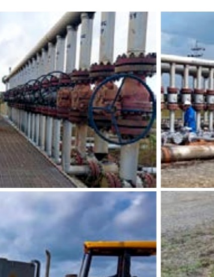
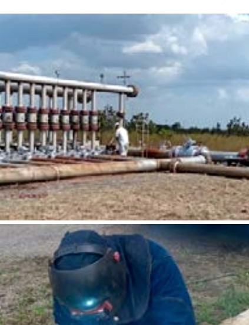
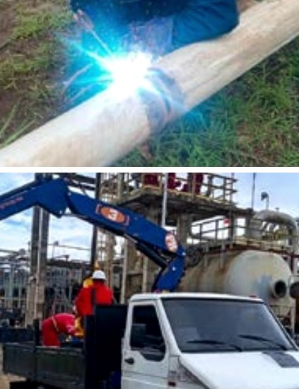
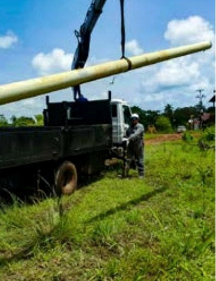

Vialidad, movimientos de tierra, asfaltado, drenajes, urbanismos, edificaciones y obras de contención.
Construcción + servicios industriales
Convertimos desafíos complejos en infraestructura real.
Ingeniería, ejecución y mantenimiento para proyectos civiles, petroleros, electromecánicos y ambientales en Venezuela.
2002Año de fundación
4Disciplinas integradas
360°Del diseño al mantenimiento
Maturín · Venezuela
01 / Nuestra visión
Construimos progreso con mentalidad de campo y visión de futuro.
TEYCHU integra capacidad técnica, ejecución disciplinada y cercanía con el cliente para desarrollar obras seguras, confiables y de valor duradero.
Seguridad primeroCalidad totalProducción inteligente
02 / Capacidades
Un equipo.
Todo el proyecto.
Coordinamos especialidades críticas bajo una misma visión operativa para reducir fricción, responder rápido y mantener el control de cada fase.
Construcción y mantenimiento de oleoductos, poliductos, gasoductos, tanques, válvulas y equipos de superficie.
Plantas compresoras, bancadas eléctricas, protección catódica, flares, vapor e intercambiadores de calor.
Consultoría, estudios de impacto, manejo de desechos, pasivos ambientales, transporte y disposición final.
03 / Método TEYCHU
Diseñar.
Coordinar.
Entregar.
Una ruta clara para convertir requerimientos técnicos en resultados de campo.
- 01
Entender el reto
Levantamos necesidades, contexto operativo, riesgos y objetivos del proyecto.
- 02
Planificar con precisión
Integramos ingeniería, recursos, compras y controles antes de movilizar.
- 03
Ejecutar con seguridad
Coordinamos equipos y especialidades con seguimiento constante en campo.
- 04
Verificar y mejorar
Controlamos calidad, documentamos resultados y cerramos cada entrega con trazabilidad.
04 / Experiencia
Capacidad que se ve en el terreno.
Una muestra del trabajo documentado por TEYCHU en infraestructura energética y operaciones de campo.



Imágenes provenientes del dossier corporativo TEYCHU, octubre 2026.

05 / Compromiso
La seguridad no acompaña el proyecto. Lo lidera.
Evaluamos riesgos, capacitamos al equipo y mantenemos controles durante todo el ciclo de trabajo. Calidad, seguridad y producción avanzan juntas.
- Análisis de riesgos por actividad
- Control y mejora continua
- Protección de las personas y el ambiente
Disponibles para nuevos proyectos
¿Qué podemos
construir juntos?
Conversemos sobre alcance, requerimientos técnicos y próximos pasos.